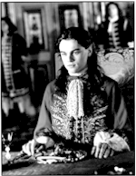
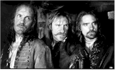
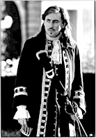

Contents | Features | Reviews | News | Archives | Store |
 |
|
| Movie Credits | Buy It! |
The Man in the Iron Mask
Review by Carrie
Gorringe
Posted 13 March 1998
 |
Written for the Screen and Directed by Randall
Wallace Starring Leonardo DiCaprio, Jeremy Irons, |
A significant point is made at both the beginning and the end of Randall Wallace’s version of The Man in the Iron Mask: each of the voiceovers contained therein (narrated by Jeremy Irons) alludes to the historical and legendary aspects of the case. Several contenders for the role of Bastille victim have been offered up and discarded over the past 200 years or so. Several scholars are now working full-time on the case, and the solution, we are assured, is just within reach. The mystery of who actually was obliged to suffer such punishment and why has the same fascination as the workings of the Bermuda Triangle, the assassination of JFK, or the real identity of Jack the Ripper; as fact and legend blur, the freedom to speculate is given full reign, and legitimized insofar as the speculation adheres to what factual material exists. Let’s not forget the ego-boost that will come to the one who "cracks" the case. The theories that have come and gone concerning the identity of the masked man, such as a close royal relative (Voltaire’s favorite theory, and the one adopted and adapted by Dumas), a double-agent who crossed the king, or a dissolute nobleman who threatened to implicate the mistress of the king in a poisoning plot, are, after close inspection, almost irrelevant to the real game at hand: the thrill of the hunt.
This cinematic version of Iron Mask – one of ten that have been made over the past ninety years – is derived from the third part of Alexandre Dumas’ "Musketeers" trilogy. At the opening of the reign of Louis XIV (DiCaprio), things have come a long way from the swashbuckling days of "all for one and one for all." Athos (Malkovich) is in retirement; Aramis (Irons) has become a priest; and d’Artagnan (Bryne) is now the head of the King’s Musketeers. Only Porthos (Depardieu) is unwilling to let go of the old freebooting, wenching ways. Unfortunately, the current ruler by Divine Right is a shameless despot who starves his people to feed his army and is currently under siege by rebellions. The four musketeers are brought together again in an attempt to aid Aramis, who has been given a royal edict to hunt down the head of the Jesuit order who has been responsible for the assassination attempts against the King’s life. Unfortunately, it is Aramis himself who directs the attempts. He gathers together his old friends to assist him in a daring scheme: if they could liberate the Man in the Iron Mask from the Bastille prison, who is the King’s twin brother, and substitute him for the real king, all would be well for the kingdom and the people of France. Athos, who has his own need for revenge against the King’s perfidy, agrees to help, as does Porthos, who is looking for any excuse to break out of the boring pattern into which his life has fallen. Only d’Artagnan refuses to help his former compatriots. Now the question becomes double-sided: can the three friends succeed in their coup, and can d’Artagnan be trusted to keep their counsel?
Of course, when a filmmaker, as in this case, has to skirt the line between history and legend, the first question that is generally brought before the movie-going public is the issue of adherence to the facts. Since the legendary aspects of this prisoner are perhaps more relevant than the historical ones, Wallace should be forgiven for following Dumas’ choice of putting the prisoner in the Bastille during the 1660s, when the prisoner was never placed there until September of 1698, and hadn’t yet been arrested. Nevertheless, warning bells should go off in a moviegoer’s head the minute that the publicity surrounding a film emphasizes the "collaborative" efforts of an original author, as is the case with Dumas, whose works were often the results of several assistants cobbled together under his vision (if said behavior among artists is valid grounds for declaring their work illegitimate, then the paintings from the workshops of Rembrandt or Vermeer should also be tossed out the door). Is this simply truth in advertising, or is there a more self-serving reason for revealing this knowledge: is someone supposed to imply that the text, or factuality itself, isn’t worth respecting, thereby permitting more adaptive license, or, perhaps, carelessness?
Although Wallace is reasonably faithful to Dumas’ work in form (having had to adapt at least two books into this film, Wallace’s literary editing skills can be described as commendable), he has not been so respectful in spirit. What is so shocking about this adaptation of Dumas is its utter lack of humor and its substitution of a plodding, dutiful tone for style. Wallace employs frequent overhead crane shots in an attempt to impress us with his camera’s fluidity; instead of being liberating, the film is ensnared in the visual geometry of the gardens of Versailles and possesses the same level of spontaneity. This adaptation of Iron Mask is as much a cinematic dullard as was Braveheart (for which Wallace wrote the script and was nominated for an Academy Award). Both Braveheart and Iron Mask have that same obligatory urge to wallow in thematic and psychological purgatory with their characters; under the circumstances, there can be no time to have any fun (save for the desperately welcome performance of Depardieu, who gives this film what precious little levity it possesses). Moreover, Wallace has stripped the sources of any of their moral ambiguity – far from being a deeply moral soul, Aramis, in Dumas’ version of events, is willing to use the prisoner’s identity in order to discredit the king and further his own goal of becoming Pope – leaving only the most lachrymose and risible sentimentality behind. Under the circumstances, it is hardly surprising that Wallace utilizes a bastardized version of the ending from Peckinpah’s The Wild Bunch (right down to the scattershot editing technique) to emphasize the closeness of the musketeers; without this visual cue, anyone could have been hard-pressed to be concerned about their fate in any case, Wallace having bled white whatever nuances their interrelationships contained many reels earlier. Before making this film, Wallace would have found it instructive to have watched Richard Lester’s 1975 adaptation of The Four Musketeers, a film no less preoccupied with grave concerns, but one which was not afraid to allow its actors the freedom to play within their roles. There is a level of levity and its companion, artistic brevity, which is sorely lacking in Iron Mask. Admittedly, Wallace does try to inject humor, but you can always feel him pulling back from the brink, as if he is petrified of the effect of laughter on his good intentions.
Iron Mask is helped not at all by some casting blunders which, upon further consideration, have to be described as absolutely inexcusable. DiCaprio, as the film’s emotional center is, sadly, the weakest element within. Watching his performance as a petulant king, one wonders just how Louis XIV ever attained his historical reputation for toughness; DiCaprio comes off more like a spoiled brat at his own birthday party who didn’t get the biggest slice of cake, than as a king who advised his heir that "a little harshness was the nicest thing I could do for my people." While the gee-whiz innocence that he projected in Titanic, all anachronisms aside, was entirely in keeping with the character of Jack, neither of his dual roles here indicate that he has the slightest clue as to what motivates his characters. Likewise Malkovich, whose aloofness tends to obscure his presumed role as a madly grief-stricken father and would-be insurrectionist. Every performance is so stilted so as to be rendered rigidly one-dimensional. It’s as if all of the actors were acting in sympathetic synecdoche with the main protagonist, but one character in physical constraints is sufficient for any film; when the constraints creep into the rest of the film, cinematic sclerosis sets in, and it’s an ugly thing to witness.
Contents | Features | Reviews | News | Archives | Store
Copyright © 1999 by Nitrate Productions, Inc. All Rights Reserved.